Chiến Lược Content SEO Tối Ưu Chuyển Đổi & Nghệ Thuật Ứng Dụng AI Bằng Công Thức CREATIVE
1. Tư duy 'Nhà đầu tư nội dung' và 5 lỗ hổng chí mạng khiến website không ra đơn 06:00
Hiện nay, sự bùng nổ của các công cụ AI khiến việc sản xuất hàng trăm, thậm chí hàng nghìn bài viết SEO mỗi tháng trở nên vô cùng dễ dàng. Tuy nhiên, phần lớn các website rơi vào tình trạng có số lượng bài viết khổng lồ nhưng không phát sinh đơn hàng hay doanh thu. Việc đưa một khối lượng lớn nội dung rác lên website chỉ tạo ra 'đống âm' mà không mang lại giá trị kinh doanh thực tế, giống như việc quăng lưới giữa đại dương mà không biết đàn cá tập trung ở đâu.
Chiến lược 'Nhà đầu tư nội dung' định hướng người làm marketing tiếp cận theo tư duy thực dụng: Thà sở hữu 100 bài viết chuyển đổi tốt mang lại hàng trăm triệu đồng doanh thu, còn hơn có 1.000 bài viết sáo rỗng chỉ để làm đẹp chỉ số. Phương pháp này khuyến nghị sử dụng quảng cáo (như Google Ads) để kiểm tra các tín hiệu chuyển đổi trước, xác định chính xác những URL có khả năng bán hàng rồi mới tập trung toàn lực đầu tư SEO cho các URL đó.
Qua khảo sát hàng nghìn website, giảng viên chỉ ra 5 lỗ hổng phổ biến khiến doanh nghiệp có traffic nhưng vẫn thất bại trong việc chốt đơn: (1) Thiếu nền tảng niềm tin (thiếu thông tin doanh nghiệp, chính sách mua bán, đổi trả); (2) Viết bài cho bot tìm kiếm đọc thay vì người mua đọc (thiếu điểm chạm cảm xúc và nút kêu gọi hành động); (3) 'Content nhựa' (lạm dụng AI tạo ra nội dung sáo rỗng, vô cảm); (4) Không có phễu giữ chân (traffic vào rồi thoát ra ngay, không có lead magnet hay bài viết liên quan); (5) Bỏ lỡ 95% khách hàng đang ở trạng thái tìm hiểu nhu cầu, chỉ cạnh tranh khốc liệt ở 3-5% tệp khách mua ngay.
- Nguyên tắc cốt lõi: Đừng đo lường SEO bằng số lượng bài viết hay thứ hạng từ khóa đơn thuần, hãy đo lường bằng tỷ lệ sinh đơn và doanh thu thực tế.
- Quy tắc thử nghiệm: Chạy ads test performance để phát hiện bài viết có tiềm năng chuyển đổi cao trước khi dồn ngân sách SEO.
- Khắc phục 5 lỗ hổng: Xây dựng trang chính sách minh bạch, viết nhắm vào tâm lý con người, loại bỏ văn phong AI vô cảm, thiết lập phễu hứng traffic và mở rộng tệp khách hàng tiềm năng chưa phát sinh nhu cầu mua ngay.
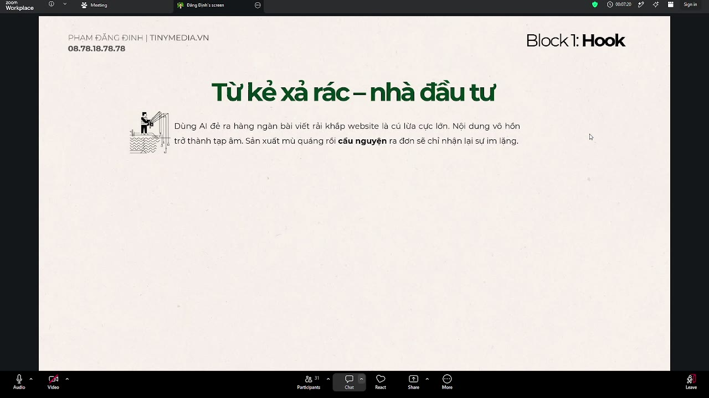
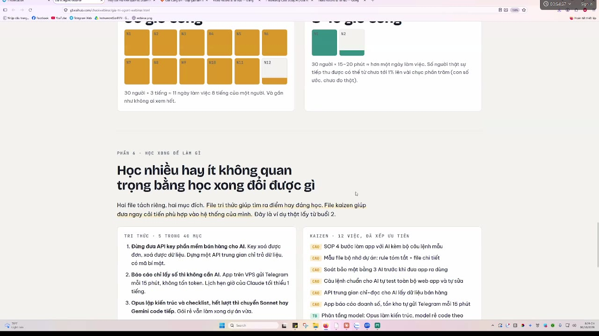
2. Ma trận phễu nội dung ToFu - MoFu - BoFu và bí mật Cookie của các thương hiệu lớn 19:48
Để khai thác triệt để toàn bộ thị trường, cấu trúc website phải được thiết kế theo một phễu nội dung hoàn chỉnh gồm 3 tầng: BoFu (Bottom of Funnel), MoFu (Middle of Funnel) và ToFu (Top of Funnel). Ví dụ điển hình từ Thế Giới Di Động trong chiến dịch bán điện thoại gaming cho sinh viên đã minh họa rõ nét cách vận hành ma trận này.
BoFu (Đáy phễu) là nơi đón những khách hàng đã có sẵn quyết định mua và cầm thẻ thanh toán trong tay (ví dụ tìm kiếm 'Samsung A16'). Trang này tuyệt đối không viết văn hoa dài dòng mà tập trung hoàn toàn vào chốt sale: giá rõ ràng, cấu hình chi tiết, ưu đãi trả góp, chính sách bảo hành và nút Mua Ngay nổi bật. CPC ở tầng này cực kỳ đắt đỏ (có thể lên tới 10.000đ/click) nhưng chỉ chiếm khoảng 2% tổng lưu lượng.
MoFu (Giữa phễu) dành cho khách hàng có nhu cầu chung nhưng bối rối lựa chọn (ví dụ tìm 'điện thoại chơi game dưới 5 triệu', 'so sánh chip Dimensity và Snapdragon'). Tại đây, doanh nghiệp đóng vai trò chuyên gia tư vấn tận tâm, cung cấp bài viết so sánh khách quan nhằm xây dựng niềm tin trước khi dẫn dắt họ xuống đáy phễu. Chi phí CPC ở tầng này dễ thở hơn (khoảng 4.000đ/click).
ToFu (Đỉnh phễu) là vũ khí tối thượng chiếm hơn 96% lưu lượng truy cập. Thế Giới Di Động thu hút hàng triệu học sinh - sinh viên qua các bài viết cung cấp mã game (code Blox Fruits, Coin Master) hoặc tin tức giải đấu. CPC tầng này cực rẻ (chưa tới 50đ/click) vì không có đối thủ cạnh tranh quảng cáo.
Bí mật đằng sau việc kéo 96% traffic đỉnh phễu chính là thuật toán Cookie. Khi người dùng truy cập website nhận quà game, trình duyệt sẽ lưu cookie của thương hiệu. Về sau, khi người đó nảy sinh nhu cầu và gõ từ khóa mua điện thoại trên Google, thuật toán tìm kiếm sẽ tự động ưu tiên đề xuất website họ thường xuyên ghé thăm lên vị trí đầu bảng kết quả tìm kiếm cá nhân hóa.
- BoFu (Đáy phễu, ~2-5% traffic): Từ khóa sản phẩm chính xác, CPC đắt nhất, mục tiêu duy nhất là chốt đơn nhanh chóng.
- MoFu (Giữa phễu): Từ khóa so sánh, cẩm nang lựa chọn giải pháp, đóng vai trò chuyên gia xây dựng niềm tin thương hiệu.
- ToFu (Đỉnh phễu, >95% traffic): Từ khóa giải trí, thông tin cộng đồng tệp khách hàng quan tâm, chi phí kéo traffic gần như bằng 0.
- Hiệu ứng tích lũy Cookie: Biến khách lạ thành độc giả quen thuộc, chiếm quyền ưu tiên hiển thị trên Google Search khi họ bước vào giai đoạn rút ví.
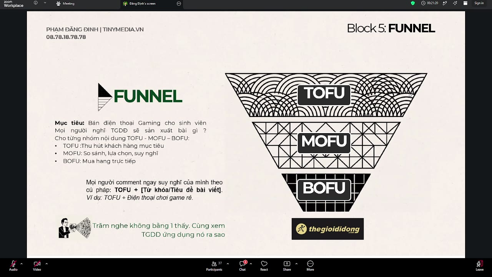
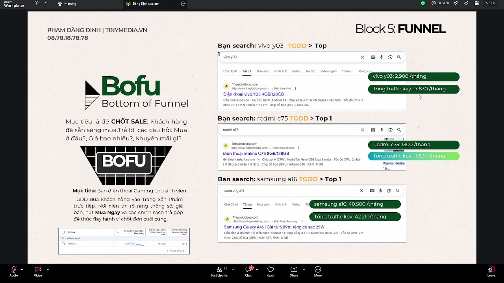
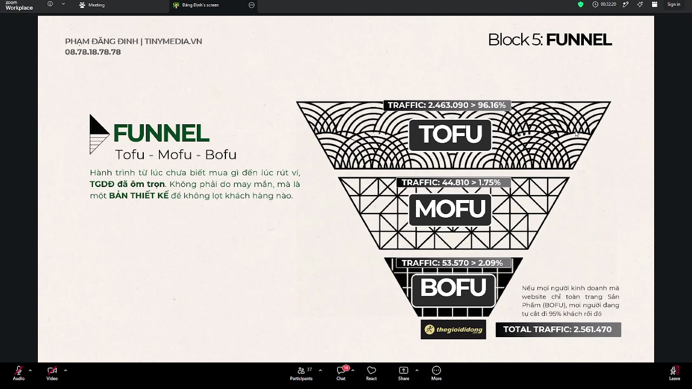
3. Bản chất vận hành AI: Sử dụng thuật ngữ chuyên ngành và định dạng Markdown/JSON 37:20
Rất nhiều người gặp tình trạng viết những đoạn prompt dài miên man nhưng AI vẫn trả về nội dung sơ sài, lạc đề. Nguyên nhân cốt lõi là AI không phải con người để cảm nhận những đoạn mô tả cảm xúc văn vẻ. Khi người dùng gõ một đoạn văn dài dòng, AI phải làm tác vụ dịch từ ngôn ngữ tự nhiên sang ngôn ngữ dữ liệu, làm thất thoát 40-70% ý đồ ban đầu.
Để làm chủ AI, người dùng cần nắm vững quy tắc: Thuật ngữ chuyên ngành chính là mật khẩu để mở khóa não bộ của AI. Thay vì giải thích dài dòng 'hãy viết bài ngắn gọn, trực diện, không dài dòng văn tự', người dùng chỉ cần yêu cầu: 'Viết theo phong cách Hemingway'. Ngay lập tức AI sẽ kích hoạt toàn bộ cơ sở dữ liệu về phong cách của Ernest Hemingway để xuất ra câu văn cô đọng, sắc bén.
Bên cạnh thuật ngữ, cấu trúc định dạng kỹ thuật là yếu tố then chốt. Việc sử dụng định dạng Markdown (các dấu #, ##, danh sách gạch đầu dòng, dấu ngoặc kép ép từ khóa) trong sản xuất nội dung chữ, và định dạng JSON trong sản xuất dữ liệu/video, giúp AI hiểu chính xác thứ tự ưu tiên của thông tin mà không cần người dùng phải giải thích dài dòng.
Giảng viên nhấn mạnh: AI không nâng tầm tư duy của bạn, nó chỉ phản chiếu trình độ chuyên môn của bạn. Một tay mơ về marketing sẽ biến AI thành kẻ viết thuê nghiệp dư; một chuyên gia thấu hiểu insight, phễu chuyển đổi và thuật ngữ thuật toán sẽ biến AI thành cỗ máy sản xuất nội dung chuyển đổi đỉnh cao.
- Không dùng ngôn ngữ kể lể: Chuyển toàn bộ yêu cầu mô tả sang thuật ngữ chuyên ngành chuẩn xác.
- Quyền năng của Markdown: Sử dụng thẻ tiêu đề (#, ##), dấu nháy kép cho từ khóa chính xác để ép AI tuân thủ tuyệt đối cấu trúc.
- Sử dụng AI Studio & Gemini: Tận dụng Gemini 1.5 Flash / Pro trên Google AI Studio để điều chỉnh tham số Temperature (0.1 - 0.2 để giảm bịa đặt, giữ độ chính xác cao) và bật tính năng Grounding with Google Search.
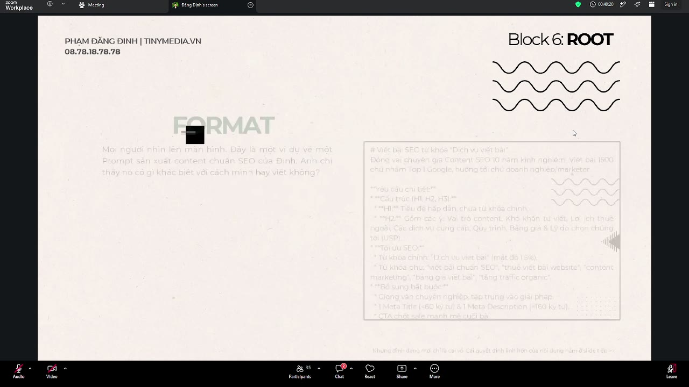
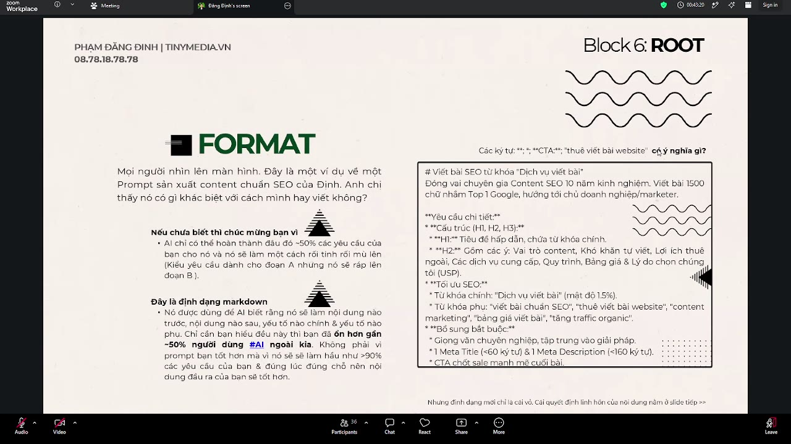

4. Công thức Prompt CREATIVE toàn diện và thực chiến sản xuất bài viết chuẩn SEO/HTML 55:28
Để đóng gói trình độ chuyên môn thành một bộ prompt hoàn chỉnh có khả năng vận hành tự động, giảng viên giới thiệu công thức CREATIVE gồm 6 thành tố nền tảng:
1. C - Context (Bối cảnh): Nền móng cung cấp thông tin về chân dung khách hàng, thương hiệu, sản phẩm và điểm bán hàng độc nhất (USP). Nếu thiếu Context, AI sẽ cào thông tin chung chung trên mạng và vô tình viết bài quảng cáo cho đối thủ.
2. R - Role (Vai trò): Không chỉ đóng một vai đơn thuần, prompt xuất sắc ép AI hóa thân thành 3 nhân vật cùng lúc: (1) Một người anh khóa trên review có tâm, chân thật; (2) Một chuyên gia SEO am hiểu thuật toán E-E-A-T; (3) Một lập trình viên Front-end HTML/CSS chuyên nghiệp để xuất bài viết ra định dạng code có sẵn bảng biểu, định dạng in đậm, thẻ heading và Schema chuẩn.
3. E - Edit & Export (Quy tắc xuất bản): Dùng lệnh dứt khoát 'Không giải thích gì thêm' để tắt chế độ chào hỏi khách sáo của AI. Đồng thời tự động chèn các câu cảnh báo / miễn trừ trách nhiệm (disclaimer) ở cuối bài để bảo vệ doanh nghiệp trước biến động giá cả hoặc thông tin y tế pháp lý.
4. A - Action (Hành động từng bước): Chia nhỏ tiến trình thành các bước chỉ huy rõ ràng (Bước 1 làm gì, Bước 2 làm gì...). Càng chia nhỏ quy trình, AI càng không có cơ hội sáng tạo lan man.
5. T - Tone (Giọng điệu & Lệnh cấm): Quy định văn phong thương hiệu và đặc biệt là thiết lập danh sách 'Lệnh cấm' nghiêm ngặt (cấm dùng từ so sánh nhất vô căn cứ, cấm khen quá đà, bắt buộc nêu nhược điểm sản phẩm...).
6. E - Example (Ví dụ mẫu): Thành tố quan trọng và tốn nhiều công sức nhất. Thay vì nói lý thuyết, người dùng cung cấp chính xác 1 đoạn mẫu HTML hoàn chỉnh đã tối ưu hóa chuyển đổi (tỷ lệ ngắt dòng 3-4 câu, vị trí chèn nút CTA, bảng so sánh giá...). AI sẽ lấy mẫu này để nhân bản chính xác hàng trăm bài viết sau đó mà không bị lệch chuẩn.
- Phần tốn thời gian nhất trong bộ Prompt: 70% thời gian tạo prompt phải dành cho khâu hoàn thiện Example mẫu.
- Xuất thẳng định dạng HTML: Bài viết từ AI có sẵn cấu trúc thẻ H2/H3, table so sánh, schema markup hợp lệ để copy thẳng vào WordPress/Web CMS mà không cần nhân sự format lại.
- Cấu hình trên Google AI Studio: Chọn Gemini Flash/Pro, thiết lập Temperature thấp (0.1 - 0.2) và bật Grounding Google Search để cập nhật số liệu mới nhất.
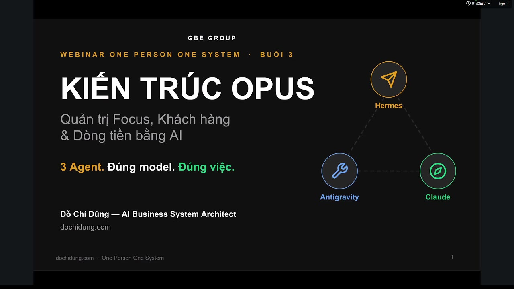
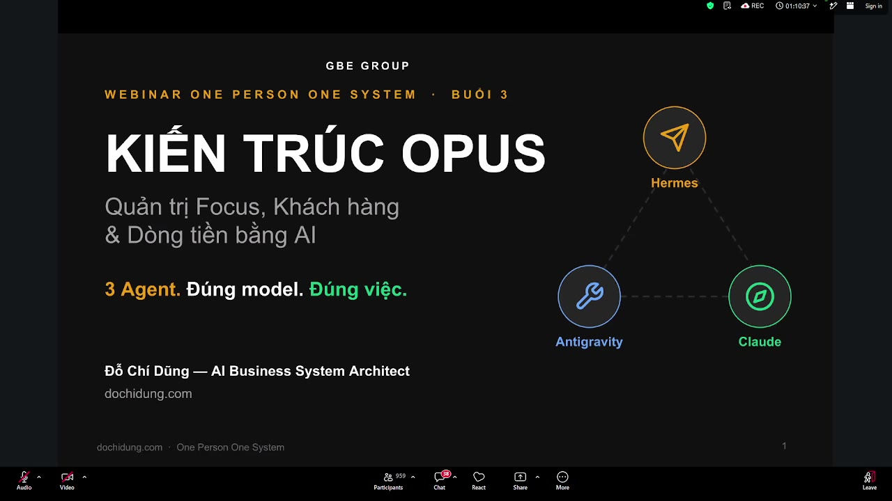
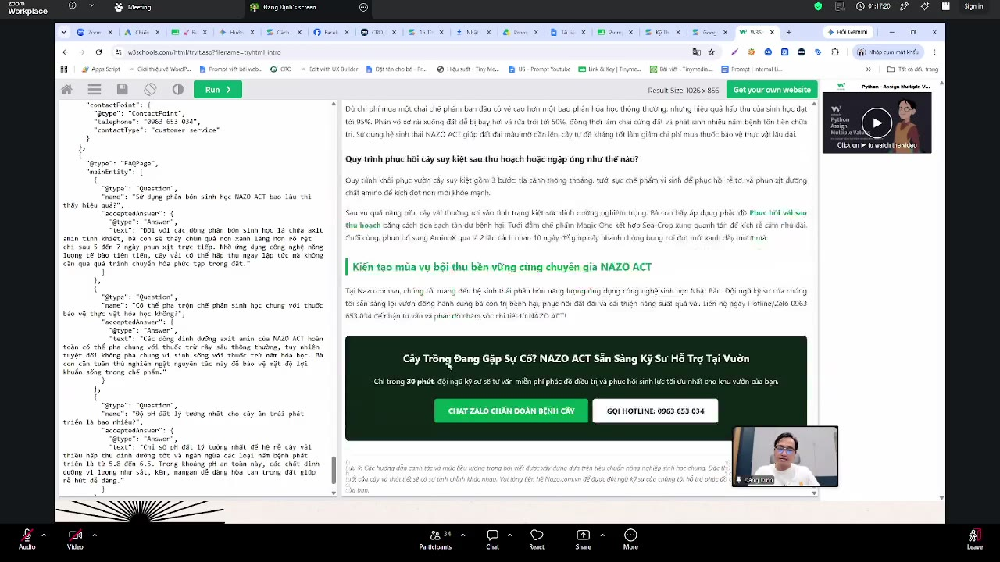
5. Biến bài viết thành cỗ máy bán hàng: Bẫy tâm lý và Ma trận kêu gọi hành động (CTA) 1:39:44
Nhiều người làm SEO thường ăn mừng khi bài viết đạt top Google và traffic tăng vọt, nhưng chủ doanh nghiệp lại không thấy doanh thu. Nguyên nhân là họ đang điều hành một 'tổ chức từ thiện thông tin': bài viết cung cấp kiến thức quá hay, quá đầy đủ nhưng lại không cài cắm bất kỳ bẫy tâm lý hay nút kêu gọi hành động nào. Khách hàng đọc xong, được giải tỏa thắc mắc liền tắt tab, sang Shopee hoặc website đối thủ để mua hàng.
So sánh thực tế giao diện bài viết Top 10 Laptop sinh viên giữa Điện Thoại Vui và Thế Giới Di Động cho thấy sự khác biệt về tư duy: Bài của Điện Thoại Vui toàn là chữ, người đọc phải cuộn chuột tìm kiếm mỏi mắt mới thấy thông tin máy. Ngược lại, bài của Thế Giới Di Động biến một bài blog thông tin thành trang trưng bày bán hàng trá hình.
Cấu trúc ma trận bán hàng của Thế Giới Di Động vận hành dựa trên 3 bẫy tâm lý: (1) Mỏ neo tâm lý: Vừa vào bài đọc, đập vào mắt là banner giảm giá sốc kèm coupon nhằm giữ chân khách; (2) Kệ hàng trực quan: Đưa hình ảnh, giá niêm yết và mức giảm giá sâu nhất lên đầu; (3) Điểm kích hoạt Dopamine: Ngay dưới mỗi đoạn phân tích ưu nhược điểm của từng sản phẩm luôn gắn kèm một nút 'Mua ngay' đúng thời điểm cảm xúc muốn sở hữu của người đọc đạt đỉnh.
- Đừng làm 'từ thiện thông tin': Hãy thiết kế nội dung với tâm thế biến người đọc thành người mua ngay trên trang blog.
- Khác biệt bản chất: Content để đọc đơn thuần (chỉ toàn văn bản) đối lập hoàn toàn với Content để đọc và mua (lồng ghép kệ hàng, giá ưu đãi, CTA).
- Tận dụng AI nhúng sản phẩm: Thiết lập trong prompt để AI tự động trích xuất bảng dữ liệu sản phẩm, đưa vào đúng vị trí sau các đoạn mô tả chốt sale.
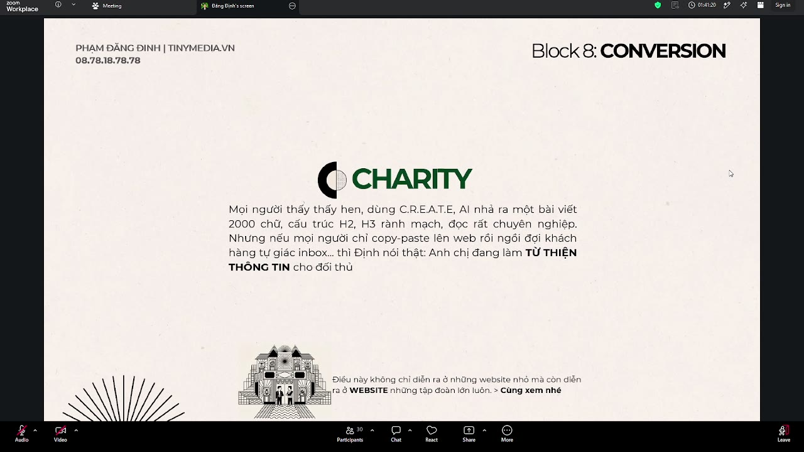
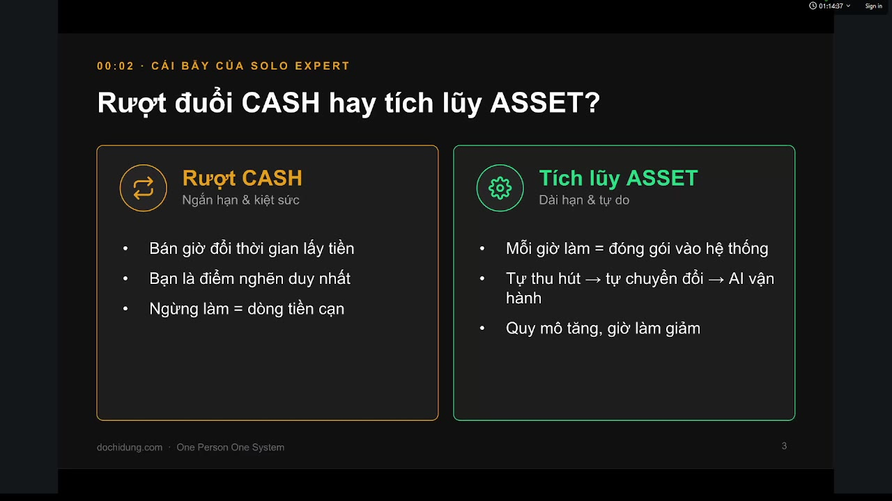
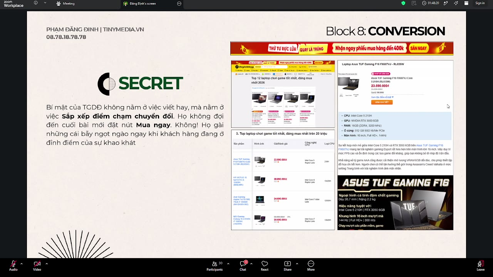
6. Quy trình 6 bước triển khai thực chiến và kỹ thuật phân bổ từ khóa theo phễu 1:50:14
Quy trình triển khai hệ thống content SEO chuẩn hóa của doanh nghiệp bao gồm 6 bước khép kín: (1) Vẽ phễu nội dung chi tiết (ToFu, MoFu, BoFu); (2) Xây dựng bộ Prompt CREATIVE chuẩn hóa riêng cho từng ngành hàng; (3) Sử dụng AI sản xuất hàng loạt theo cấu trúc định sẵn; (4) Khâu rà soát, kiểm duyệt và chèn hình ảnh thực tế (mỗi nhân sự phụ trách hoàn thiện 30-40 bài/ngày); (5) Đăng tải lên website có đầy đủ liên kết nội bộ và CTA; (6) Chạy quảng cáo Google Ads kiểm thử ngược từ đáy phễu lên đỉnh phễu.
Quy trình chạy ads kiểm thử được thực hiện từ đáy phễu: Bắt đầu từ trang sản phẩm (BoFu), tiếp tục đến các bài so sánh giải pháp (MoFu), và cuối cùng là các bài đỉnh phễu (ToFu). Việc chạy ads trước giúp xác thực dữ liệu chuyển đổi thực tế: trang nào mang lại đơn hàng thì ngay lập tức dồn lực SEO để đẩy lên Top bền vững.
Trong phần giải đáp trực tiếp cho các ngành hàng như Tranh sơn dầu và Forex, giảng viên thị phạm cách dùng AI tự động phân nhóm từ khóa theo phễu: Đáy phễu là các từ khóa 'bảng giá', 'mua tranh sơn dầu phòng khách', 'mở tài khoản sàn forex'; Giữa phễu là 'cách chọn kích thước tranh', 'so sánh phí spread giữa các sàn'; Đỉnh phễu là 'ý tưởng trang trí phòng khách phong cách Wabi Sabi', 'cách bảo quản tranh tránh ẩm mốc', 'hướng dẫn kiểm soát tâm lý giao dịch'. Bằng cách này, mọi bài viết sản xuất ra đều đóng một vai trò chiến lược rõ ràng trong hệ thống.
- Lộ trình 6 bước: Vẽ phễu -> Xây Prompt CREATIVE -> AI viết bài -> Nhân sự duyệt và gắn ảnh -> Đăng web -> Chạy ads test chuyển đổi.
- Nguyên tắc triển khai ngược: Sản xuất và test ads từ đáy phễu (BoFu) ngược lên đỉnh phễu (ToFu) để kiểm soát dòng tiền doanh thu trước.
- Giải quyết lo ngại trùng lặp H2/H3: Google không bóp tương tác vì cấu trúc tương tự nhau nếu nội dung giải quyết đúng ý định tìm kiếm (Search Intent). Doanh nghiệp cần tập trung vào bài viết hữu ích và chứng minh được tỷ lệ ra đơn.

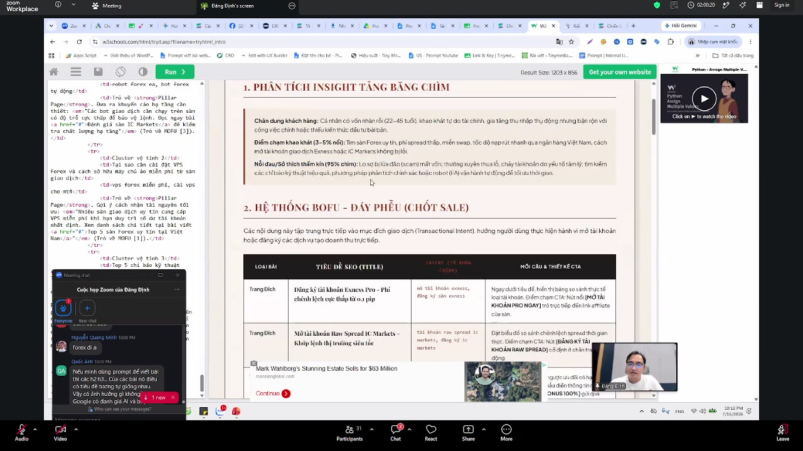
★ Tóm tắt bài giảng
- Thay đổi tư duy SEO từ 'số lượng bài viết' sang 'nhà đầu tư nội dung': Dùng Google Ads kiểm tra tỷ lệ chuyển đổi trước khi dồn lực SEO bài viết.
- Khắc phục triệt để 5 lỗ hổng website: bổ sung trang tín nhiệm doanh nghiệp, viết cho con người đọc, loại bỏ content nhựa, xây phễu giữ chân và khai thác 95% tảng băng chìm thị trường.
- Cấu trúc website theo ma trận 3 tầng ToFu (hút traffic khổng lồ, giá rẻ), MoFu (xây niềm tin qua so sánh, tư vấn) và BoFu (tập trung chốt sale, đặt nút Mua ngay).
- Tận dụng hiệu ứng Cookie: Thu hút hàng triệu người dùng ở tầng ToFu để lưu cookie, giúp Google tự động ưu tiên xếp hạng website lên đầu khi họ tìm kiếm từ khóa mua sắm.
- Bản chất điều khiển AI: Sử dụng thuật ngữ chuyên ngành và định dạng Markdown/JSON thay vì giải thích văn vẻ dài dòng.
- Vận hành công thức Prompt CREATIVE 6 bước: Context (bối cảnh), Role (đa vai trò Reviewer/SEO/Frontend), Edit/Export (luật xuất bản và miễn trừ), Action (chia nhỏ bước), Tone (lệnh cấm), Example (mẫu HTML chuẩn chuyển đổi).
- Loại bỏ tư duy 'từ thiện thông tin': Đưa kệ hàng ưu đãi, mỏ neo tâm lý và nút mua hàng vào ngay trong bài blog để kích hoạt hành vi mua sắm khi cảm xúc người đọc dâng cao.